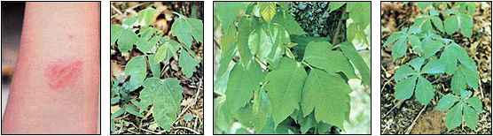

SANDRA DARK
LEFT TO RIGHT: These ridges of blisters are characteristic of a poison ivy or poison oak rash, and are a sure sign that you've wandered through a patch of the toxic plants. Contrary to popular belief, breaking the blisters will not spread the dermatitis. . . The best way to avoid catching the rash is to steer clear of the skin-irritating foliage. Poison oak is a shrubby ground plant that favors shaded woodland areas . . . while poison ivy vines, on the other hand, tend to climb trees or other upright supports. Both species produce a deceptively attractive lush green growth. Learn to recognize the plants by their alternate leaves with three leaflets per frond. . . and you won't mistake the inoffensive five-leaved Virginia creeper vine for its dangerous tri-leaved neighbors